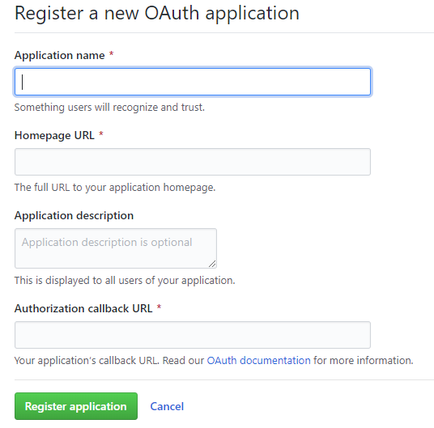
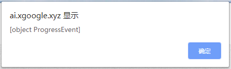

前言
Gitment是作者实现的一款基于 GitHub Issues 的评论系统。支持在前端直接引入，不需要任何后端代码。可以在页面进行登录、查看、评论、点赞等操作，同时有完整的 Markdown / GFM 和代码高亮支持。尤为适合各种基于 GitHub Pages 的静态博客或项目页面。
接入过程
1、注册 OAuth Application
通过注册地址https://github.com/settings/applications/new进行注册，注册页面如下：

注意Authorization callback URL填上自己网站首页url地址。
注册成功会得到一个 client ID 和一个 client secret，将用于以下的配置文件中。
2、编辑主题配置文件_config.yml进行配置
找到Gitment配置区域：
1 | # Gitment |
其中github_user为你的github用户名，github_repo一定要是仓库的名称，不要写成仓库地址，这里可以保持同github pages共用一个库，当然你也可以选择使用新建的仓库。client_id和client_secret就是上一步注册时得到的。
可能遇到的问题
到此通过 hexo d 重新部署应该能看到博客文章页面下已出现Gitment评论区，不过可能存在一些问题。
- 登录报错 “[object ProgressEvent]”

出错原因：在原开发者版本中调用的js文件里，有访问gitment作者的服务器代码，而作者的服务器不好使了。具体调用的js文件可以在主题第三方插件目录下看到，打开\themes\next\layout\_third-party\comments\gitment.swig文件，定位到如下部分:1
2
3
4
5
6
7
8
9
10
11<!-- LOCAL: You can save these files to your site and update links -->
{% if theme.gitment.mint %}
{% set CommentsClass = "Gitmint" %}
<link rel="stylesheet" href="https://aimingoo.github.io/gitmint/style/default.css">
<script src="https://aimingoo.github.io/gitmint/dist/gitmint.browser.js"></script>
{% else %}
{% set CommentsClass = "Gitment" %}
<link rel="stylesheet" href="https://imsun.github.io/gitment/style/default.css">
<script src="https://imsun.github.io/gitment/dist/gitment.browser.js"></script>
{% endif %}
<!-- END LOCAL -->
可以看到gitment.browser.js是原作中使用的js文件，该文件中会调用作者的服务器接口‘https://gh-oauth.imsun.net’，该接口可能已无法访问，所以我们需要自己来实现接口代替。
解决方法：自己的服务器中创建实现类似作者定义的接口。
在自己的服务器中clone原作者使用的源文件：
1
git clone https://github.com/imsun/gh-oauth-server.git
进入项目目录，下载依赖并启动服务：
1
npm install && nohup npm start &
如果服务运行成功，会在项目目录下的nohup.out文件的结尾提示正在监听3000端口，接着使用nginx搭配https反向代理转发服务器本地3000端口。这样就可以使用自己的服务器网址替换前面提到的作者的接口。
- 我已将前面的gitment.swig文件里引用的两个js文件均作了接口替换，同时保存在了我的Hexo博客目录下，所以现在来替换swig文件中的js引用地址：
1
2
3
4
5
6
7
8
9
10
11
12
13<!-- LOCAL: You can save these files to your site and update links -->
{% if theme.gitment.mint %}
{% set CommentsClass = "Gitmint" %}
<link rel="stylesheet" href="https://aimingoo.github.io/gitmint/style/default.css">
- <script src="https://aimingoo.github.io/gitmint/dist/gitmint.browser.js"></script>
+ <script src="https://ai.xgoogle.xyz/js/src/gitmint.browser.js"></script>
{% else %}
{% set CommentsClass = "Gitment" %}
<link rel="stylesheet" href="https://imsun.github.io/gitment/style/default.css">
- <script src="https://imsun.github.io/gitment/dist/gitment.browser.js"></script>
+ <script src="https://ai.xgoogle.xyz/js/src/gitment.browser.js"></script>
{% endif %}
<!-- END LOCAL -->
理论上你只需将gitment.swig文件按上面这样修改后，即可在博客中正常使用Gitment评论功能了。